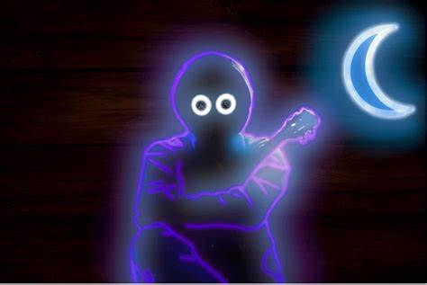

Toxic
By Boy With Uke..

All my friends are toxic
All ambitionless, so rude and always negative
I need new friends
But it's not that quick and easy
Oh, I'm drowning, let me breathe
I'm better off all by myself
Though I'm feelin' kinda empty without somebody else
Oh, I hear you cryin' out for help
But you never showed for me when I was ringin' your cell phone
Oh, you don't know, how it feels to be alone
Baby, oh, I'll make you know, I'll make you know, oh
(I'm drowning, let me breathe)
(I'm drowning, let me breathe)
(I'm drowning, let me breathe)
(I'm drowning, let me breathe)
But life is immaculate
Backin' it up a bit
Countin' my hours and knocking on wood
Avoiding my opposites
Chewin' on chocolate
Had a bit limited time but I should
Be good for a minute
Don't want to admit it
I'm running on seconds
I'm rigid, I'm screwed
Don't know what to do
I'm thinking of you
I'm drinking up bottles and bottles of booze
I'm better off all by myself
Though I'm feelin' kinda empty without somebody else
Oh, I hear you cryin' out for help
But you never showed for me when I was ringin' your cell phone
Oh, you don't know, how it feels to be alone
Baby, oh, I'll make you know, I'll make you know, oh
I fell into your river
That's where you told me lies
You said that I'd feel better
But this is where good guys die
You took my pride away
But you cannot take my light
I'll find another way out
But now you're taking my life
Don't you see how I—
I'm better off all by myself
Though I'm feelin' kinda empty without somebody else
Oh, I hear you cryin' out for help
But you never showed for me when I was ringin' your cell phone
Oh, you don't know, how it feels to be alone
Baby, oh, I'll make you know, I'll make you know, oh
I'm better off all by myself
Though I'm feelin' kinda empty without somebody else
Oh, I hear you cryin' out for help
But you never showed for me when I was ringin' your cell phone
Oh, you don't know, how it feels to be alone
Baby, oh, I'll make you know, I'll make you know, oh